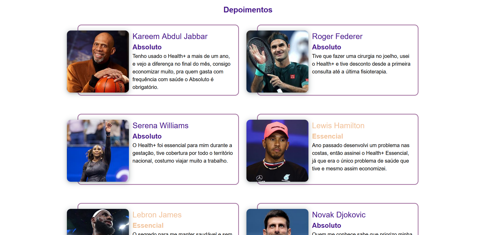

Health+
Status: Completo
Ver Código TestarO que me levou a construir o projeto?
Aceitei um desafio para construir uma landing page, partindo disso busquei fazer além de um projeto html-css-js, gostaria de colocar em prática a componentização da página, eu sabia que era uma boa opção fazer um projeto html puro por conta do SEO, já que o React puro não é tão eficiente nesse sentido, então parti para uma aplicação React com Next, que atenderia tanto o SEO quanto a componentização e de quebra aproveitar as vantagens do Typescript.

Tecnologias
- React
- Next
- Material UI
- Typescript
- JavaScript
- HTML5
- CSS3
Aprendizado
- Estilização
- Estruturas HTML5
- Posicionamento com CSS3
- Criação de componentes React
- Customização de componentes do Material UI
- Criação de tema do Material UI
- Responsividade